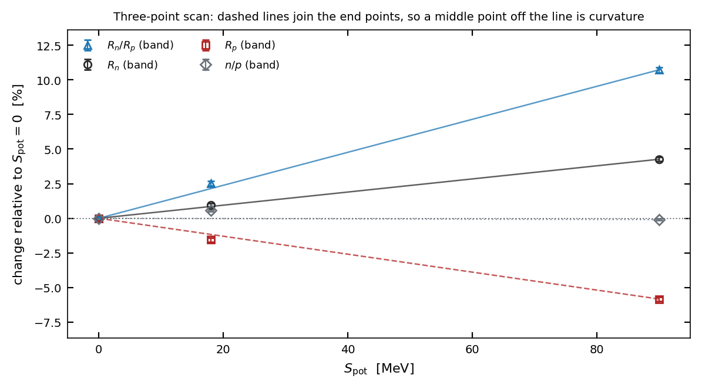
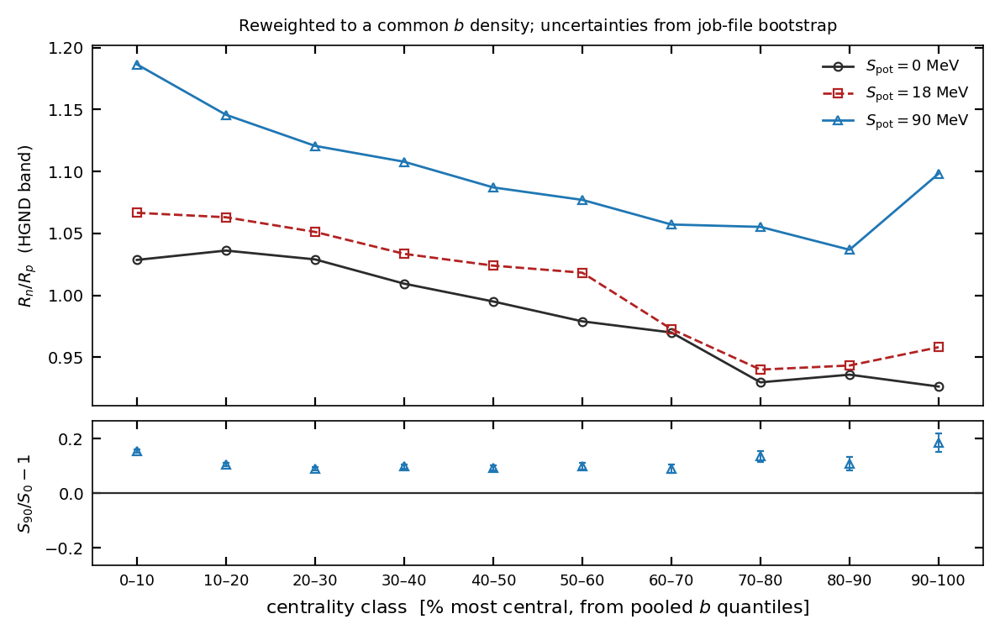
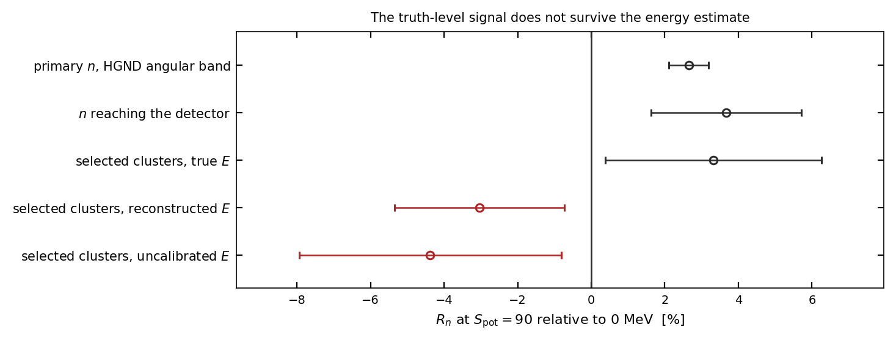
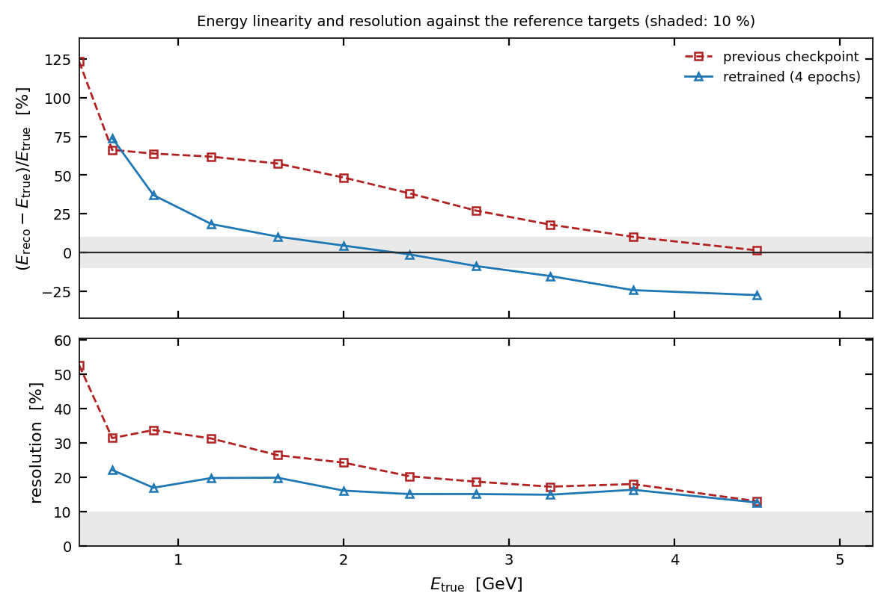
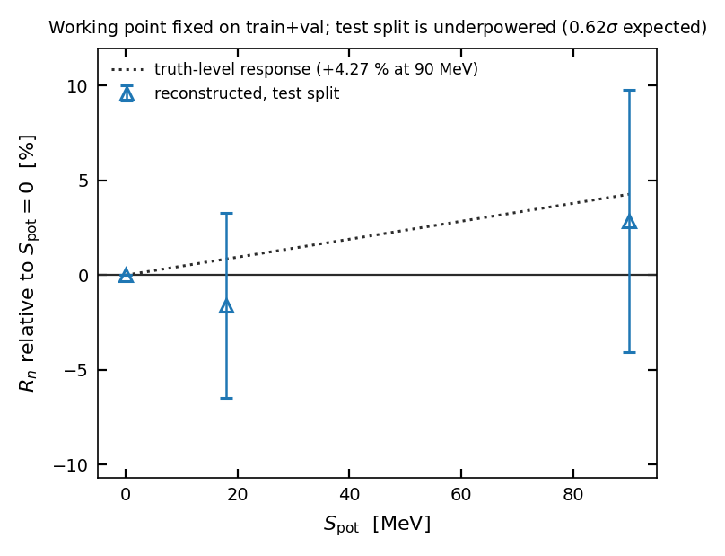

BM@N · High-Granularity Neutron Detector
Status and the route to submission
The physics observable is established at MC-truth level and centrality is under control. Reconstruction is no longer the unknown it was a week ago: the failure was located, two thirds of it was preprocessing, and a partial retrain has already halved what remained. What stands between here and a submitted manuscript is four pieces of ordinary work, none of them research.
Recommendation: submit the reconstruction paper, not a physics measurement. The SMASH samples carry an upstream simulation defect and no re-simulation has been run, so the Spot numbers cannot be a measurement whatever the reconstruction does. They are strong as a sensitivity study and as a stress test that exposed a real, generalisable failure mode — a reconstruction whose energy response depends on the physics being measured. That is a publishable methods result today.
A physics-sensitivity claim needs re-simulated samples and belongs in a second paper.
1 What is established
Spectral hardness responds to the symmetry potential with opposite sign for the two species. At Spot = 0 the double ratio sits at 1.009, which is where it should be when no symmetry potential acts.
| observable | 0 MeV | 18 MeV | 90 MeV | 90/0 − 1 | floor |
|---|---|---|---|---|---|
| Rn/Rp | 1.00909 | 1.03461 | 1.11739 | +10.73 % | 0.25 % |
| Rp | 0.68086 | 0.67035 | 0.64112 | −5.84 % | 0.20 % |
| Rn | 0.68705 | 0.69355 | 0.71638 | +4.27 % | 0.16 % |
| n/p yield | 1.17590 | 1.18258 | 1.17484 | −0.09 % | 0.09 % |
The fitted slope is +0.118 % per MeV. Divided by the noise floor measured from same-sample splits, that is a truth-level statistical reach of about 2 MeV in Spot. It is a reach, not an experimental uncertainty, and it does not convert to a bound on L without the transport relation between Spot and the density-dependent symmetry energy.
The n/p yield ratio is excluded, and on stronger grounds than its significance: its middle point sits 7.2σ off the line through the outer two and the three values are not ordered. A quantity that does not vary monotonically with a parameter is not responding to it.

These numbers exist because of one methodological fix
Events generated in the same job are correlated in impact parameter. Within a single sample, where no Spot difference can exist, job means of b scatter at χ²/ndf = 8.15 for 194 degrees of freedom. Per-event errors understate every b-dependent uncertainty by 2.85×.
That factor is not academic. With per-event errors the b distributions of the three samples look irreconcilable (χ²/ndf = 13.57, p = 2×10−63); with job-level errors they agree (1.57, p = 0.029). An earlier conclusion that the whole Spot signal was a centrality artefact rested on the wrong one and has been withdrawn.


2 What reconstruction does to it
Following Rn through the chain on one set of events isolates where the measurement is lost. The sign survives detector acceptance and cluster selection, and reverses at the energy estimate.
| stage | 90/0 − 1 | σ | reading |
|---|---|---|---|
| primary neutrons, polar-angle band | +2.65 ± 0.54 % | 4.93 | truth response reproduced |
| neutrons reaching the detector | +3.67 ± 2.05 % | 1.79 | acceptance keeps the sign |
| selected clusters, true energy | +3.32 ± 2.94 % | 1.13 | classifier is not the problem |
| same clusters, reconstructed energy | −3.04 ± 2.30 % | 1.32 | the energy estimate is |
The last two rows use the same clusters, so the change is a paired difference: −8.66 ± 2.21 %. Finite resolution alone pulls an answer toward zero; this moves it further than the effect is worth, which means the estimator responds differently to the different samples. It does — by 30.7 ± 8.6 MeV in the bin where the Rn numerator lives.

Two thirds of it was preprocessing
eToF is the available-energy baseline from hit time and coordinate, and
compensating its overestimation is part of what the network does. Standardising it
separately in each sample therefore rescales a physics-bearing quantity by a different
factor in each — 1.9 % across the scan, the largest shift of any input.
One shared normalisation, the same weights, no retraining:
| quantity | per-sample scalers | shared scaler |
|---|---|---|
| differential high-bin response | −30.7 ± 8.6 MeV (3.55σ) | −11.4 ± 9.8 MeV (1.16σ) |
| reconstructed 90/0 effect | −3.04 % | +2.25 ± 2.43 % |
| paired displacement | 2.81σ | 0.53σ |
| Rn ordered 0/18/90 | no | yes |
A partial retrain halved what remained
Retrained on the three samples pooled, split by generation job, one scaler fitted on train. Thermal throttling stretched epochs from 7 to over 50 minutes and the run stopped after 4 of 20 epochs, so this is a lower bound on the architecture.

3 What the held-out test can and cannot say
With the working point chosen on train+val and applied once to test, the result is +2.87 ± 6.92 %. That uncertainty is the whole story.

This is the single most important thing to fix, and it is the cheapest. The job files needed are 5.5 MB per pair on the cluster — about 1.5 GB for 280 — against the 154 MB per file that made the primary exports expensive.
4 Route to submission
- Produce the two placeholder figures: detector layout and GNN architecture. Open since review v5 and the only hard blocker to the submit button.
- State the trials factor on the 289-configuration working-point scan (review v7, Ma-4), and the assumptions behind the 284-job estimate (Ma-5).
- Clear the editorial markers: three
\NUM{}, one\CITENEEDED, one author-list TODO. - Install
siunitxandphysicsand do a real build. Every check so far stubbed them.
Every truth-level number is currently computed in the polar-angle band, which is 7.7× the solid angle of the detector and spans azimuths it does not cover. Because the generator holds the reaction plane fixed and v1 is energy dependent, the azimuth cannot be weighted away.
- Run
slurm/reduce_prim.ncx.sbatchwhere the data is local. The mount has been serving at 0.2 MB/s, so streaming 25 GB from here is not viable. - Re-run the reweighting and the three-point scan in the front-face acceptance.
- Expect the signal to grow: on sub-samples where both selections exist the double ratio moves from +8.0 % to +15.3 % on the same events.
- Full 20 epochs on the pooled three-sample split with one scaler fitted on train. The laptop throttled; this belongs on the cluster.
- Repeat the paired ladder and the response diagnostic as the acceptance test.
- Compare at least one model family beyond
net_default, which the systematics section still needs.
- Transfer hits and vacs for ~280 additional generation jobs (~1.5 GB) and preprocess with the same scaler.
- Re-run the pre-registered working point. Only now does the gate mean anything.
Not on the path to this paper. Re-simulation. The SMASH samples carry an upstream defect and the current production is a re-conversion of the same events, not a new run. No amount of reconstruction work changes that, which is precisely why this manuscript should present a sensitivity study and a methods result rather than a measurement.
5 Risks
| risk | effect | mitigation |
|---|---|---|
| P2 fails its gate after full training | no reconstructed sensitivity for the paper | Fall back to a forward-folded spectrum fit with calibration nuisance parameters. The forward model already closes bin by bin to 0.1 %; only the inversion fails. |
| ncx throughput stays at 0.2 MB/s | P1 and P3 stall | Both run on the cluster and return tens of MB. Only the submission of those jobs needs a hand on ncx. |
| Acceptance numbers move the headline | text and figures need another pass | Expected direction is a larger signal, so conclusions harden rather than reverse. Band numbers are labelled as conservative. |
| Referee rejects the sensitivity framing | major revision | Review v7 already argues the framing internally; the withdrawn-claims list is explicit about what the numbers are not. |